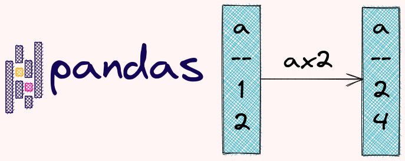

Change Values
Contents

4.1. Change Values#
4.1.1. pandas.DataFrame.pipe: Increase the Readability of your Code when Applying Multiple Functions to a DataFrame#
!pip install textblob
If you want to increase the readability of your code when applying multiple functions to a DataFrame, use pands.DataFrame.pipe method.
from textblob import TextBlob
import pandas as pd
def remove_white_space(df: pd.DataFrame):
df['text'] = df['text'].apply(lambda row: row.strip())
return df
def get_sentiment(df: pd.DataFrame):
df['sentiment'] = df['text'].apply(lambda row:
TextBlob(row).sentiment[0])
return df
df = pd.DataFrame({'text': ["It is a beautiful day today ",
" This movie is terrible"]})
df = (df.pipe(remove_white_space)
.pipe(get_sentiment)
)
df
| text | sentiment | |
|---|---|---|
| 0 | It is a beautiful day today | 0.85 |
| 1 | This movie is terrible | -1.00 |
4.1.2. Apply a Function to a Column of a DataFrame#
If you want to apply only one function to a column of a DataFrame, use apply.
import pandas as pd
df = pd.DataFrame({"col1": [1, 2], "col2": [3, 4]})
df
| col1 | col2 | |
|---|---|---|
| 0 | 1 | 3 |
| 1 | 2 | 4 |
df["col1"] = df["col1"].apply(lambda row: row * 2)
df
| col1 | col2 | |
|---|---|---|
| 0 | 2 | 3 |
| 1 | 4 | 4 |
4.1.3. Apply a Function to a DataFrame Elementwise#
The apply method applies a function along an axis of a DataFrame. If you want to apply a function to a DataFrame elementwise, use applymap.
import pandas as pd
df = pd.DataFrame({"col1": [2, 9], "col2": [3, 7]})
print(df )
col1 col2
0 2 3
1 9 7
print(df.applymap(lambda val: 'failed' if val < 5 else 'passed'))
col1 col2
0 failed failed
1 passed passed
4.1.4. Assign Values to Multiple New Columns#
If you want to assign values to multiple new columns, instead of assigning them separately, you can do everything in one line of code with df.assign.
In the code below, I first created col3 then use col3 to create col4. Everything is in one line of code.
import pandas as pd
df = pd.DataFrame({"col1": [1, 2], "col2": [3, 4]})
df = df.assign(col3=lambda x: x.col1 * 100 + x.col2).assign(
col4=lambda x: x.col2 * x.col3
)
df
| col1 | col2 | col3 | col4 | |
|---|---|---|---|---|
| 0 | 1 | 3 | 103 | 309 |
| 1 | 2 | 4 | 204 | 816 |
4.1.5. pandas.Series.map: Change Values of a Pandas Series Using a Dictionary#
If you want to change values of a pandas Series using a dictionary, use pd.Series.map.
import pandas as pd
s = pd.Series(["a", "b", "c"])
s.map({"a": 1, "b": 2, "c": 3})
0 1
1 2
2 3
dtype: int64
map also allows you to insert a string to a pandas Series using format.
import pandas as pd
s = pd.Series(["berries", "apples", "cherries"])
s.map("Today I got some {} from my garden.".format)
0 Today I got some berries from my garden.
1 Today I got some apples from my garden.
2 Today I got some cherries from my garden.
dtype: object
4.1.6. pandas.DataFrame.explode: Transform Each Element in an Iterable to a Row#
When working with pandas DataFrame, if you want to transform each element in an iterable to a row, use explode.
import pandas as pd
df = pd.DataFrame({"a": [[1, 2], [4, 5]], "b": [11, 13]})
df
| a | b | |
|---|---|---|
| 0 | [1, 2] | 11 |
| 1 | [4, 5] | 13 |
df.explode("a")
| a | b | |
|---|---|---|
| 0 | 1 | 11 |
| 0 | 2 | 11 |
| 1 | 4 | 13 |
| 1 | 5 | 13 |
4.1.7. Split a String into Multiple Rows#
Sometimes, you might have a column whose values are strings representing different items such as "1, 2".
import pandas as pd
df = pd.DataFrame({"a": ["1,2", "4,5"], "b": [11, 13]})
df
| a | b | |
|---|---|---|
| 0 | 1,2 | 11 |
| 1 | 4,5 | 13 |
To turn each string into a list, use Series.str.split():
# Split by comma
df.a = df.a.str.split(",")
df
| a | b | |
|---|---|---|
| 0 | [1, 2] | 11 |
| 1 | [4, 5] | 13 |
Now you can split elements in the list into multiple rows using explode.
df.explode('a')
| a | b | |
|---|---|---|
| 0 | 1 | 11 |
| 0 | 2 | 11 |
| 1 | 4 | 13 |
| 1 | 5 | 13 |
4.1.8. Forward Fill in pandas: Use the Previous Value to Fill the Current Missing Value#
If you want to use the previous value in a column or a row to fill the current missing value in a pandas DataFrame, use df.fillna(method=’ffill’). ffill stands for forward fill.
import numpy as np
import pandas as pd
df = pd.DataFrame({"a": [1, np.nan, 3], "b": [4, 5, np.nan], "c": [1, 2, 3]})
df
| a | b | c | |
|---|---|---|---|
| 0 | 1.0 | 4.0 | 1 |
| 1 | NaN | 5.0 | 2 |
| 2 | 3.0 | NaN | 3 |
df = df.fillna(method="ffill")
df
| a | b | c | |
|---|---|---|---|
| 0 | 1.0 | 4.0 | 1 |
| 1 | 1.0 | 5.0 | 2 |
| 2 | 3.0 | 5.0 | 3 |
4.1.9. Replace the Missing Values with the Most Frequent Categories in a Column#
If you want to replace missing values with the most frequent categories in a column, find the mode of your DataFrame and use it to fill the missing values.
import numpy as np
import pandas as pd
df = pd.DataFrame({"a": [1, 3, np.nan, 3], "b": [4, 5, 4, np.nan]})
df
| a | b | |
|---|---|---|
| 0 | 1.0 | 4.0 |
| 1 | 3.0 | 5.0 |
| 2 | NaN | 4.0 |
| 3 | 3.0 | NaN |
df.fillna(df.mode().iloc[0])
| a | b | |
|---|---|---|
| 0 | 1.0 | 4.0 |
| 1 | 3.0 | 5.0 |
| 2 | 3.0 | 4.0 |
| 3 | 3.0 | 4.0 |
4.1.10. Encode Categorical Values in a Pandas DataFrame#
There are multiple ways for you to encode a categorical column in a pandas DataFrame. If you simply want to convert each value in a column to a number, use cat.codes.
import pandas as pd
df = pd.DataFrame({"col1": ["a", "b", "b", "c"]})
# Convert col1 to a category
df["col1"] = df["col1"].astype("category")
# Encode col1
df["encoded_col1"] = df["col1"].cat.codes
print(df)
col1 encoded_col1
0 a 0
1 b 1
2 b 1
3 c 2